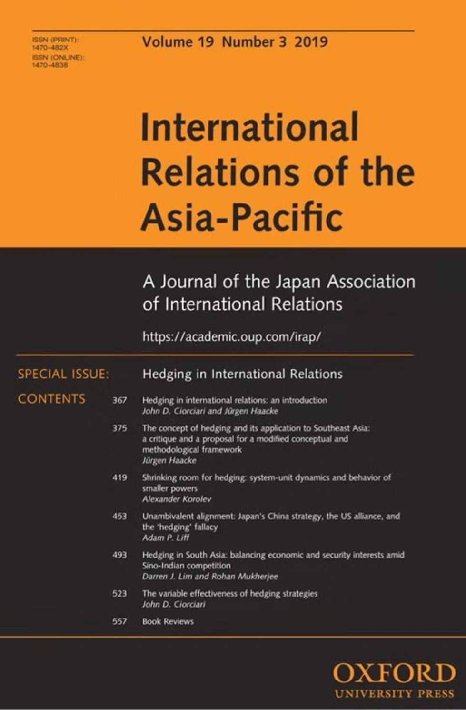

收录于合集 #新刊速递 123个
期刊简介

International Relations of Asia-Pacific ，成立于2001年，由牛津大学出版社代表日本国际关系协会出版，每年1月、5月和9月出版共三次。该期刊主要关注亚太地区的国际政治动态，包括中国国内政治、美国在亚太地区的地位、地区治理、日本对外关系、亚洲与国际关系理论、中国的全球化道路以及中国的国家认同等。根据2018 Journal Citation Reports显示，其影响因子为1.233。
本期编委
编译：
金磊 李源 徐垚晟 陈舜波
校对审核：
金磊 李源 蔡宇 徐垚晟 陈舜波
编辑：
赵怡雯
本期目录
1. The concept of hedging and its application to Southeast Asia: a critique and a proposal for a modified conceptual and methodological framework
“对冲”概念及其在东南亚的应用：批判与一项新的概念和方法框架倡议
2. Shrinking Room for Hedging: System-unit Dynamics and Behavior of Smaller Powers
对冲空间的缩小：系统单元动态与小国行为
3. Unambivalent alignment: Japan’s China strategy, the US alliance, and the ‘hedging’ fallacy
不矛盾的同盟：日本的中国战略，日美同盟，与“对冲”悖论
4. Hedging in South Asia: balancing economic and security interests amid Sino-Indian competition
南亚对冲：在中印竞争中平衡经济和安全利益
5. The variable effectiveness of hedging strategies
论对冲战略有效性的变化
摘要译文
1.
“对冲”概念及其在东南亚的应用：批判与一项新的概念和方法框架倡议 ****
【题目】 The concept of hedging and its application to Southeast Asia: a critique and a proposal for a modified conceptual and methodological framework
【作者】
Jürgen Haacke（伦敦政治经济学院）
【摘要】 在后冷战时期复杂的单极格局下，中国重新崛起为经济与军事大国，一些小国与中等国家愈发被认为正在使用对冲战略。这种分析在东南亚国家中尤为流行，它们中许多国家面临着来自中国的安全挑战。然而，随着对冲研究的扩展，这一概念本身的分析价值似乎不再受到重视。在现有研究中，关于对冲的不同理解彼此竞争，存在许多根据经验确定的对冲战略标准，这甚至引发了在一个基本问题上的混乱，即哪个国家正在使用着对冲战略。因此，本文改进了对冲的概念与方法框架，并以这一框架清楚地说明对冲与其他安全战略的区别，明确了评估小国在面临来自大国的严重安全挑战时是否正在使用对冲战略的关键标准，同时以马来西亚与新加坡作为这一框架的分析对象。
In the context of the complex unipolar post-Cold War period that has witnessed China’s reemergence as an economic and military power, small and middle powers are increasingly considered to be hedging. This analysis is especially prevalent in relation to Southeast Asian countries, many of which face security challenges posed by China. However, as the literature on hedging has expanded, the concept’s analytical value is no longer obvious. Different understandings of hedging compete within the literature, and there are many criteria by which hedging is empirically ascertained, leading to confusion even over the basic question of which countries are hedging. In response, this article presents a modified conceptual and methodological framework that clearly delineates hedging from other security strategies and identifies key criteria to evaluate whether smaller powers are hedging when confronting a serious security challenge by one of the major powers. This framework is then applied to Malaysia and Singapore.
【编译】李源
【校对】金磊
【审核】陈舜波
2.
对冲空间的缩小：系统单元动态与小国行为 ****
【题目】 Shrinking Room for Hedging: System-unit Dynamics and Behavior of Smaller Powers
【作者】
Alexander Korolev（新南威尔士大学）
【摘要】 本文通过对小国对冲行为局限性的强调和检验，提出了对国际政治中“对冲”的理解。“对冲”是区域或国家层面而非系统层面变量的结果，随着大国之间的竞争和制衡越来越激烈，小国可利用的对冲空间在缩小。本文以冷战后的南中国海地区，特别是菲律宾、越南和马来西亚的行为演变作为研究对象，展示了在中美竞争日益激烈的情况下，这些地区国家开始从对冲转向对大国更为明显的追随而不顾其国内社会政治倾向。因此，对冲具有局限性，并且可以设想为是一种与大国权力均衡强度成反比的“奢侈品”。
This article advances the understanding of ‘hedging’ in international politics by highlighting and examining the limits to smaller powers’ hedging behavior. Building on the line of reasoning that hedging is an outcome of regional or state-level, rather than system-level, variables, the article suggests that the room for hedging available to smaller states shrinks as great powers become more competitive and attempt to balance against one another. With an empirical focus on the post-Cold War South China Sea region, particularly the evolving behavior of the Philippines, Vietnam, and Malaysia, the article demonstrates how, under the conditions of growing China–US competition, these regional states start moving from hedging to more pronounced bandwagoning vis- à-vis great powers regardless their domestic-level sociopolitical dispositions. Therefore, hedging has limits and can be envisaged as a ‘luxury’ that is inversely related to the intensity of great power balancing.
【编译】金磊
【校对】李源
【审核】陈舜波
3.
不矛盾的同盟：日本的中国战略，日美同盟，与“对冲”悖论 ****
【题目】 Unambivalent alignment: Japan’s China strategy, the US alliance, and the ‘hedging’ fallacy
【作者】
Adam Liff（印第安纳大学伯明顿分校）
【摘要】 本文考察了亚太地区的地缘政治形势的变化是否导致日本通过安全与经济联系多样化或者重大的战略调整，以“对冲”不断加深的不确定性和风险（正如普遍的研究“对冲”文献所预期的那样）。本文检视了2009年以来日本的三个重要领域：安全政策(主要)、贸易/投资和公众舆论的变化趋势，来确定日本的对华战略是否发生改变。尽管不确定性(和动荡)不断加深（尤其是在“特朗普时代”），这项研究发现“对冲”行为的证据几乎可以忽略不计。例如，重新定位与北京的关系或采取“中间立场”，更不用说与中国发展任何有意义的安全关系了。相反，现在的趋向是走向（与对冲战略）相反的方向：日本的对华战略主要集中在加强本土威慑能力、加强美日同盟和使地区内日本的安全关系多样化。甚至后者，在某种程度上也是自相矛盾的，其目标是深化与华盛顿的关系，并积极参与地区事务。
This article examines whether the Asia-Pacific region’s geopolitical vicissitudes are causing Japan to ‘hedge’ against deepening uncertainty and risk through major strategic realignments or diversification of security and economic ties, as the original hedging literature would expect. It examines trends since 2009 in three domains fundamental to identifying whether shifts are underway in Japan’s strategic orientation vis-à-vis China: security policy (primary), trade/investment, and public opinion. Despite deepening uncertainty (and volatility), especially in ‘the Trump era’, this study finds negligible evidence of hedging behavior: e.g., realigning toward Beijing or adopting a ‘middle position’, much less developing any meaningful security ties with China. Rather, contemporary trends point in the opposite direction: Japan’s China strategy primarily centers on strengthening indigenous deterrence capabilities, bolstering the US–Japan alliance, and diversifying regional security ties beyond Beijing. Even the latter, somewhat paradoxically, aims to deepen ties with Washington and to keep it actively engaged in regional affairs.
【编译】徐垚晟
【校对】蔡宇
【审核】陈舜波
4.
南亚对冲：在中印竞争中平衡经济和安全利益 ****
【题目】 Hedging in South Asia: balancing economic and security interests amid Sino-Indian competition
【作者】
Dr Darren Lim（澳洲国立大学）；Rohan Mukherjee（李光耀公共政策学院)
【摘要】 基于美中在东亚和东南亚地区的竞争，把对冲作为一种次等国家战略的文献聚焦于一个大国既带来经济机遇又带来安全威胁的状况。相比之下，面临印度和中国的战略竞争，南亚地区的次等国家在没有安全威胁的情况下采取了对冲战略。本文从理论上对这两种现象进行了调和。对冲的核心是在竞争环境中与大国合作时，对物质利益和自主成本之间的关系进行权衡。当这些利益和成本同时上升时，国家很可能会采取对冲战略。本文通过马尔代夫和斯里兰卡的案例验证了这一理论的合理性。无论安全威胁是否存在，对自主性的权衡都不可或缺，这在更大的经验范围内推动了理论的进步。
The literature on hedging as a secondary state strategy – built largely on evidence from United States-China competition in East and Southeast Asia – focuses on conditions where a major power presents both an economic opportunity and a security threat. In South Asia, in contrast, secondary states facing strategic competition between India and China have pursued hedging strategies in the absence of a security threat. We develop a theoretical reconciliation of these two phenomena. Hedging at its core involves a trade-off between the material benefits and autonomy costs of cooperating with a major power in a competitive environment. States are likely to hedge when these benefits and costs are simultaneously rising. We test the plausibility of this theory in the cases of the Maldives and Sri Lanka. The autonomy trade-off operates both in the absence and in the presence of a security threat, thus offering a theoretical advancement with greater empirical scope.
【编译】陈舜波
【校对】李源
【审核】蔡宇
5.
论对冲战略有效性的变化 ****
【题目】 The variable effectiveness of hedging strategies
【作者】
John D. Ciorciari (美国密歇根大学福特公共政策学院)
【摘要】 政府往往采用对冲战略来缓冲他们在国际事务中所面临的风险。政府通过抵消全球市场中的风险，来对冲传统的金融风险；为了制衡国际安全风险，政府还通过保持战略模糊性、结成有限的安全同盟，培育有限的防卫能力，以防止潜在的威胁变为现实。这两种的对冲战略被视为深谋远虑的行为。然而对冲战略有时也会失败。风险难以衡量，且对冲风险的措施往往成本过高。其中，对冲国际安全风险的战略特别具有挑战性，因为即便不惜任何代价寻找，政府也常常缺少足够的保护措施。本文比较了两个相反的案例：东南亚国家在1997年金融危机后对冲金融风险的成功案例，以及一部分相同的国家对冲中国在南海军事行动影响的相对不成功的案例。
Governments often adopt hedging strategies to mitigate risks they face in international affairs. They hedge in the conventional, financial of the term by seeking to offset risks in global markets. They also adopt strategies to hedge against international security hazards by preserving strategic ambiguity, forging limited security alignments, and cultivating modest self- protection in case potential threats materialize. Both types of hedging typically are seen as prudent behavior. However, hedging strategies sometimes fail. Risks can be difficult to calculate, and the measures needed to hedge against them can be costly. Hedging international security risks can be particularly challenging, as governments sometimes lack access to adequate protective options at any price. This article illustrates the argument with two contrasting cases: relatively successful Southeast Asian hedging against the risk of financial calamity after the 1997 crisis and less effective efforts by some of the same states to hedge against the security risk of Chinese encroachment in the South China Sea.
【编译】蔡宇
【校对】徐垚晟
【审核】陈舜波
点击左下角“ 阅读原文”可获取本期英文版原文
扫下方二维码查看往期精彩
【新刊速递】第01期 | Review of International Studies Vol.45, No.4, 2019
【新刊速递】第02期 | International Relations Vol.33, No.3, 2019
【新刊速递】第03期 | International Organization Vol.73, No.3, 2019
【新刊速递】第04期 | World Politics, Vol.71, No.4, 2019
【新刊速递】第05期 | European Journal of International Relations
【新刊速递】第06期 | Security Studies, Vol.28, No.4, 2019
【新刊速递】第07期|International Secur.ity, Vol 44, No. 2, 2019 | 国政学人
【新刊速递】第8期| Cambridge Review of International Affairs,Vol.32,No.4
分类导览一

 分类导览二
分类导览二
国政学人
支持学术公益与知识传播
微信扫一扫赞赏作者 __赞赏
已喜欢，对作者说句悄悄话
取消 __
发送给作者
发送
最多40字，当前共字
上一页 1/3 下一页
长按二维码向我转账
支持学术公益与知识传播
受苹果公司新规定影响，微信 iOS 版的赞赏功能被关闭，可通过二维码转账支持公众号。